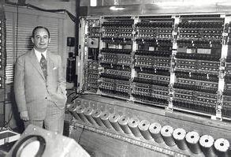

Sejarah
Dimulai pada tahun 1950-an dengan pengembangan komputer dan teknologi berbasis mikroprosesor.
Sumber : Kumparan.com
Orang Paling Berpengaruh
.jpg)
Sumber: ethw.org
John von Neumann, yang berkontribusi dalam pengembangan komputer modern. Dalam komputasi, karya John von Neumann berdiri sebagai landasan, membentuk fondasi komputer digital modern. Kontribusinya adalah konsep Cellular Automata (CA), sebuah model yang meletakkan dasar untuk desain komputer serba guna pertama.
Hal Paling Menonjol
Sumber : ethw.org
Cellular Automata (CA), sebuah model yang meletakkan dasar untuk desain komputer serba guna pertama. Penggunaan komputer dan otomatisasi dalam industri meningkatkan efisiensi produksi.
Dampak
Revolusi Industri 3.0, juga dikenal sebagai Revolusi Digital, adalah periode transformasi industri yang dimulai pada tahun 1960-an dan ditandai dengan penggunaan komputer dan teknologi berbasis elektronik. Revolusi ini membawa perubahan signifikan dalam berbagai bidang, termasuk manufaktur, komunikasi, dan transportasi. Revolusi Industri 3.0 juga menyebabkan peningkatan produktivitas, efisiensi, dan inovasi. Salah satu aspek terpenting dari Revolusi Industri 3.0 adalah perkembangan teknologi informasi dan komunikasi. Komputer menjadi lebih kecil, lebih murah, dan lebih mudah digunakan, yang memungkinkan bisnis dan individu terhubung dan berbagi informasi dengan lebih mudah. Perkembangan internet juga memainkan peran besar, memungkinkan orang untuk berkomunikasi dan bertukar informasi secara global.
Sumber : biotifor.or.id